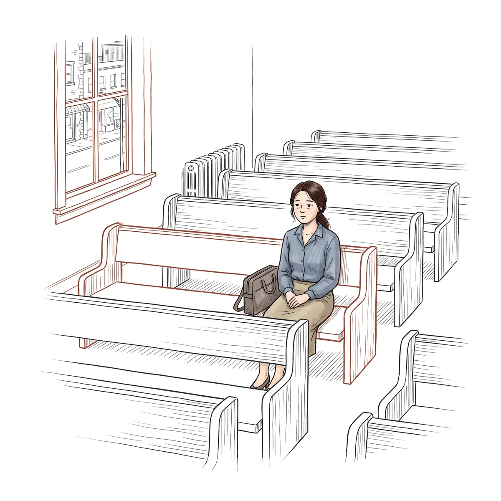
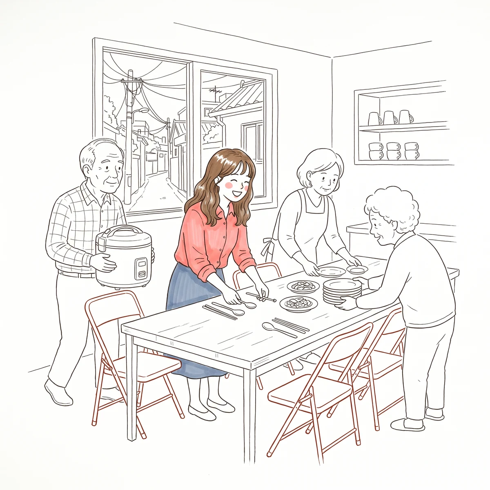
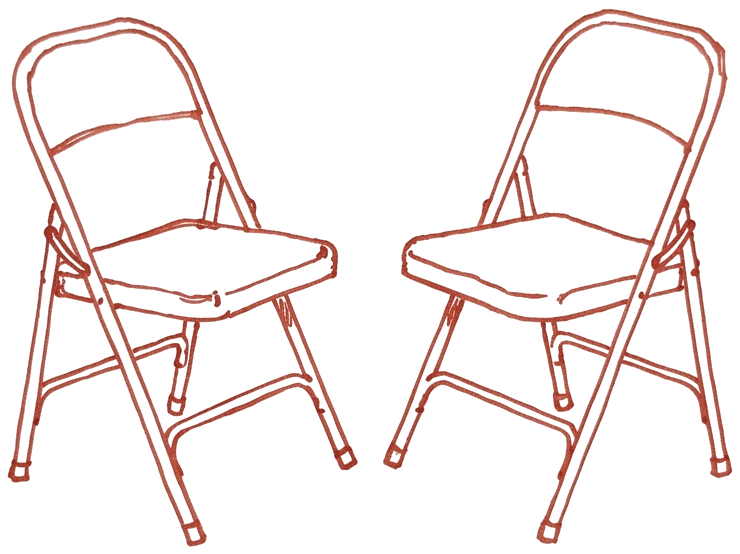

1과
반쪽이 아니라 한 사람입니다

여는 이야기
명절에 모인 친척들 사이에서 '요즘 만나는 사람 있니?'라는 질문이 오갑니다. 웃으며 넘겼지만 집으로 돌아오는 길, 같은 달에만 친구들에게서 받은 청첩장 두 장이 떠오릅니다. 남들은 다 자기 짝을 찾아 앞으로 나아가는데 나만 제자리에 멈춰 서 있는 것 같아 마음이 조급해집니다. 다른 한쪽에는 지금 연애를 하고 있는 청년이 있습니다. 아침에 보낸 메시지에 연인의 답장이 늦어지자 온종일 일이 손에 잡히지 않습니다. 짧은 답장 하나에 그날의 기분이 오르내리고, 저녁에 드리는 기도마저 답답합니다. 혼자여서 불안한 사람과 연인이 있어서 불안한 사람은 서로 반대 처지에 있는 것처럼 보입니다. 그러나 두 사람 모두 '내 옆에 짝이 있어야 내가 온전해진다'는 같은 생각 위에 서 있습니다.
 '반쪽' 이야기는 어디서 왔나
'반쪽' 이야기는 어디서 왔나
많은 사람이 세상 어딘가에 나를 완성해 줄 단 한 사람이 있다고 믿습니다. 흔히 말하는 '운명적인 반쪽'이나 '소울 메이트'라는 생각입니다. 사람들은 이 짝을 만나면 굳이 애쓰지 않아도 마음이 저절로 통하고, 나의 부족함이 말끔히 채워질 것이라고 기대합니다. 어떤 사람은 강렬한 끌림과 감정을 그 증거로 삼고, 어떤 사람은 나를 조금도 바꾸려 하지 않고 있는 그대로 맞춰 주는 사람을 천생연분이라고 여깁니다. 심지어 신앙의 말을 빌려 하나님께서 오직 나만을 위해 정해 두신 바로 그 한 사람을 찾아내야 한다고 생각하기도 합니다.
그러나 사람이 본래 하나였다가 둘로 갈라졌기 때문에 제 반쪽을 찾아 헤맨다는 이야기는 성경에서 나온 것이 아닙니다. 옛 그리스 철학자 플라톤은 인간이 원래 강력한 한 몸이었는데, 신들이 인간을 약하게 만들려고 둘로 쪼개 놓았다는 이야기를 남겼습니다. 반토막이 난 인간은 잃어버린 반쪽을 그리워하며 다시 하나가 되려 했지만, 서로 달라붙은 채 떨어지지 못하고 아무것도 하지 못하다가 죽어 갔다는 이야기입니다. 이런 시각에서 보면 사랑은 사람을 강하게 세워 주는 것이 아니라, 상대에게 매달려 자기의 고유한 개체성을 잃어버리게 만드는 일이 됩니다. 상대 없이는 삶이 시시해지고 멈춰 버리는 지나친 의존 상태에 빠지는 것입니다.
성경이 말하는 인간의 모습은 이와 전혀 다릅니다. 성경 어디에도 나만을 위해 미리 정해진 단 한 사람의 짝을 신비한 직감으로 찾아내야 한다는 가르침은 없습니다. 성경이 말하는 사람의 근본 문제는 반쪽과 갈라진 것이 아니라, 죄로 말미암아 생명의 근원이신 하나님과 멀어진 것입니다. 사람에게 다른 사람이 필요한 것은 반쪽이 떨어져 나가서가 아니라 처음부터 관계 안에서 살도록 지어졌기 때문입니다. 그러므로 예수 그리스도의 십자가를 통해 하나님과 화목해질 때 비로소 우리는 본래 지음받은 사람으로 회복됩니다.
나에게 꼭 들어맞는 완벽한 짝이 어딘가에 있다는 생각은 실제 관계에서도 큰 해를 끼칩니다. 죄 많은 세상에서 흠이 없는 사람은 없으며, 아무리 가까워 보여도 처음부터 서로에게 딱 맞는 두 사람은 존재하지 않습니다. 함께 시간을 보내고 가까워질수록 연애할 때는 미처 몰랐던 낯선 모습과 나와 맞지 않는 면이 드러나기 마련입니다. 그런데도 '운명의 짝이라면 힘들 리가 없다'고 믿는 사람은 관계에 수고와 갈등이 찾아올 때 상대와 맞춰 가며 사랑하는 법을 배우는 대신 '내가 사람을 잘못 골랐다'고 결론을 내립니다. 진짜 내 반쪽이 다른 곳에 있을 것이라며 지금 곁에 있는 사람을 쉽게 포기해 버리는 것입니다. 성경은 강렬한 감정이나 막연한 운명에 기대어 짝을 찾으라고 하지 않고, 상대의 성품과 삶의 방향과 신앙을 차분히 살피며 지혜롭게 선택하고 함께 자라 가라고 가르칩니다.
Think 1. 성경은 사람의 근본 문제가 반쪽과 갈라진 것이 아니라 무엇이라고 말합니까?
하나님의 형상으로 지어진 한 사람
성경은 사람을 누구의 반쪽이라고 부르지 않습니다. 창세기 1장 27절은 사람의 시작을 이렇게 선언합니다. "하나님이 자기 형상 곧 하나님의 형상대로 사람을 창조하시되 남자와 여자를 창조하시고"(창 1:27). 남자가 하나님의 형상대로 지어지고 여자는 남자의 형상대로 지어진 것이 아닙니다. 남자와 여자 모두 처음부터 똑같이 하나님의 형상대로 지음받았습니다. 두 사람은 본질과 가치에서 동등하며, 서로 다른 특성과 역할을 가지고 서로를 보완하며 협력하도록 창조되었습니다.
따라서 한 사람의 가치는 연인이 있는지, 결혼을 했는지에 따라 결정되지 않습니다. 우리는 누군가를 만나야 비로소 한 사람 몫을 하게 되는 미완성품이 아니라, 창조주 하나님의 형상을 지닌 존귀한 인격체입니다. 하나님께서 마련하신 가정 또한 개인의 이름을 지우는 곳이 아니라, 그 안에서 각자가 사랑과 소속감을 누리며 개인의 가치를 바르게 일깨우고 하나님의 품성을 닮아 가는 자리입니다.
이 사실은 두 사람이 깊은 관계를 맺거나 결혼한 뒤에도 변하지 않습니다. 인간의 타락 이후로 죄는 사람과 사람 사이의 사랑에도 이기심과 두려움을 끌어들였습니다. 그 결과 서로에게 책임을 떠넘기며 비난하거나, 힘과 속임수로 상대를 지배하고 한 사람의 고유한 개성을 짓누르는 왜곡된 관계가 생겨났습니다. 그러나 하나님께서 원래 세우신 사랑의 질서는 어느 한쪽이 다른 쪽에 흡수되어 자기를 잃어버리는 관계가 아닙니다. 『기본교리』(412쪽)는 부부의 연합을 두고 "그들은 하나로 결합되어야 하지만, 그들 중 어느 하나도 하나님의 소유인 그의 개성을 상실함이 없어야 한다"고 분명히 밝힙니다.
아무리 가까운 사이라 해도 각 사람은 하나님 앞에서 자기 자신이 내린 선택에 책임을 지는 독립된 인격입니다. 내가 저지른 잘못을 연인이나 배우자 탓으로 돌릴 수 없고, 내 영적 성장을 상대방에게 대신해 달라고 맡길 수도 없습니다. 각 사람이 하나님과 바른 관계를 맺고 설 때, 그 믿음이 곁에 있는 사람에게도 건강한 힘과 격려를 흘려보내는 통로가 됩니다. 참된 사랑은 나를 지워 상대의 그림자로 살게 하는 것이 아니라, 하나님께서 주신 고유한 개성을 지킨 두 사람이 서로의 행복을 북돋우며 조화를 이루게 합니다.
Think 2. 사랑해도 개인의 개성을 잃지 말아야 한다는 말에 동의합니까, 이유는 무엇입니까?
사람이 채울 수 없는 자리
우리가 하나님의 형상으로 지어진 한 사람이라는 사실을 잊어버리면, 하나님께서만 채우실 수 있는 마음 가장 깊은 자리를 사람에게 맡기게 됩니다. 오늘날 많은 사람이 과거에는 하나님을 향한 믿음에서 찾던 삶의 의미와 장래의 소망, 흔들리지 않는 자기 정체성과 안전감을 로맨틱한 사랑에서 얻으려 합니다. 사랑하는 연인을 내 삶의 빈자리를 남김없이 메워 줄 구원자의 자리에 올려놓는 것입니다.
누군가에게 '나는 너 없이는 살 수 없어', '네가 있어야만 내가 행복할 수 있어'라는 말을 들으면 당장은 내가 특별한 사람이 된 것처럼 기분이 좋을 수 있습니다. 그러나 그 말은 말하는 사람이 자기 행복의 결정권을 연약한 한 사람에게 통째로 넘기겠다는 뜻이고, 듣는 사람에게는 하나님 노릇을 해 달라는 무거운 짐입니다. 내가 그 말을 하는 쪽이 되어도 마찬가지입니다. 흠이 있고 유한한 사람이 다른 사람의 구원자가 될 수는 없습니다. 그 자리를 연인이나 배우자에게 맡기면 상대는 감당할 수 없는 기대에 짓눌리고, 나는 상대가 내 마음을 다 채워 주지 못한다는 사실에 끊임없이 실망하며 불평하게 됩니다. 골로새서 2장 9절에서 10절은 우리의 충만함이 어디에서 오는지 분명히 말씀합니다. "그 안에는 신성의 모든 충만이 육체로 거하시고 너희도 그 안에서 충만하여졌으니 그는 모든 통치자와 권세의 머리시라"(골 2:9–10). 하나님만큼 큰 마음의 빈자리는 오직 하나님께서만 메우실 수 있습니다.

결혼하지 않은 채 지내던 한 여성의 이야기가 이를 잘 보여 줍니다. 주변에서는 혼자 사는 그를 어딘가 부족한 사람처럼 여겼고, 그도 남자친구가 자기와 결혼해 주어야만 자신이 온전한 사람으로 인정받을 수 있다고 믿었습니다. 남자친구가 결혼을 미루자 그의 마음에는 깊은 수치심과 분노가 쌓였습니다. 상담가는 남자에게 기대는 대신 일과 경력에서 성공을 거두어 스스로 가치 있는 사람임을 증명하라고 조언했고, 그는 경력을 좇기 시작했습니다. 그러던 중 우연히 찾아간 교회에서 처음으로 복음을 들었습니다. 높은 점수를 쌓아 구원을 얻는 것이 아니라, 예수님께서 의를 선물로 주신다는 소식이었습니다. 그는 그제야 연인의 사랑에서 가치를 찾던 것처럼 일의 성공에서 가치를 찾는 것도 해결책이 아니라는 것을 깨달았습니다. 연인을 잃을 때처럼 경력에 문제가 생기면 삶이 무너지기는 마찬가지였기 때문입니다. 그는 마침내 사람의 인정이나 사회적 성취가 아니라, 예수 그리스도께서 값없이 주시는 의로움과 사랑 안에서 자기의 가치를 찾기로 결단했습니다. 하나님 앞에서 나를 아름답게 세우시는 분이 예수님이라는 사실을 깨닫자, 비로소 마음의 분노가 가라앉고 남을 너그럽게 용납하며 섬길 수 있는 정서적 여유가 찾아왔습니다.
하나님 안에서 누리는 이 안전감이 없으면 연애를 시작하거나 이어 갈 때도 조급함에 휘둘리기 쉽습니다. 혼자 지내는 시간이 외롭고 비참하게 느껴져서, 혹은 주변 친구들이 하나둘 약혼하고 결혼하는 모습을 보며 나만 뒤처진다는 압박감에 시달려서 마음이 절박해지는 것입니다. 이런 자기연민과 불안 때문에 상대가 나와 함께 하나님 나라를 구할 좋은 동반자가 아니라는 것을 알면서도 기준을 낮추어 대충 타협해 버리는 일이 벌어집니다. 당장 한 끼 배가 고프다고 식당 바로 옆에 평생 살 집을 사는 것처럼, 외로움을 빨리 끝내고 싶다는 이유로 섣불리 관계를 묶는 것입니다. 또한 그동안 이 관계에 쏟아부은 시간과 감정이 아깝다는 이유만으로 건강하지 못한 관계를 끝내지 못하고 붙잡고 있기도 합니다. 그러나 외로움과 불안을 피하려고 기준을 버리고 타협한 관계는 고통을 줄여 주지 않고 오히려 더 큰 좌절과 외로움을 가져오기 쉽습니다. 내가 이미 하나님께 온전히 사랑받고 있으며 그분의 돌보심 안에서 안전하다는 사실을 믿을 때, 우리는 사람에게 매달리거나 조급함에 밀려 타협하지 않고 지혜롭게 관계를 분별할 수 있습니다.
Think 3. 내가 사람에게서 채우려 하기 쉬운 마음의 빈자리는 무엇이라고 생각합니까?
짝이 있든 없든 귀한 삶

사람이 짝을 만나야만 완성되는 존재가 아니라면, 지금 연애를 하지 않거나 결혼하지 않은 삶은 어떻게 보아야 할까요. 사도 바울은 고린도전서 7장 7절에서 이렇게 말합니다. "나는 모든 사람이 나와 같기를 원하노라 그러나 각각 하나님께 받은 자기의 은사가 있으니 이 사람은 이러하고 저 사람은 저러하니라"(고전 7:7). 성경은 결혼한 삶과 독신으로 지내는 삶 모두를 하나님 앞에서 귀하고 합당한 길로 인정합니다. 결혼을 강요하지도 않고 독신을 강요하지도 않으며, 어느 쪽을 택하든 하나님 나라를 먼저 구하며 의롭게 살아갈 수 있다고 가르칩니다.
고대 사회에서는 결혼해 자녀를 낳고 가문을 잇는 것만이 인생의 의미를 남기는 유일한 길로 여겨졌습니다. 오늘날의 대중문화 역시 로맨틱한 사랑을 만나는 것이 인생의 전부인 것처럼 그려 냅니다. 심지어 교회 안에서조차 혼자 지내는 청년들에게 '하나님 한 분만으로 만족하면 곧 좋은 짝을 주실 거야', '아직 눈이 높아서 그래', '더 다듬어진 뒤에 상급으로 짝을 주시려나 보다' 같은 말로 위로를 건네곤 합니다. 이런 말들의 밑바닥에는 독신을 아직 성숙하지 못해 겪는 결핍의 상태이거나, 결혼이라는 진짜 삶으로 넘어가기 전의 임시 대기 시간쯤으로 여기는 생각이 깔려 있습니다.
그러나 이 땅에서 가장 온전한 인격으로 사셨던 예수님께서도 독신으로 사셨고, 바울 역시 혼자 지내는 삶의 유익을 기꺼이 누렸습니다. 성경이 독신을 귀하게 여기는 까닭은 결혼이 나빠서가 아니라, 이 땅의 결혼이 장차 완성될 하나님 나라와 그리스도와의 완전한 연합을 비추어 주는 그림자이자 맛보기이기 때문입니다. 이미 임했지만 아직 완성되지 않은 하나님 나라를 바라보는 그리스도인에게는 결혼도 독신도 인생의 궁극적인 목적이 아닙니다. 결혼했다고 해서 모든 것을 다 얻은 것처럼 들뜰 것도 없고, 짝이 없다고 해서 인생이 실패한 것처럼 주저앉을 일도 아닙니다.
물론 창세기 2장 18절은 "여호와 하나님이 이르시되 사람이 혼자 사는 것이 좋지 아니하니 내가 그를 위하여 돕는 배필을 지으리라 하시니라"(창 2:18)라고 말씀합니다. 사람은 고립된 채 혼자 살아가도록 지어지지 않았습니다. 남성과 여성은 서로에게 없는 모습을 통해 서로를 보완하도록 지어졌으며, 참된 충족은 남성과 여성이 함께 어우러져 살아가는 사회 안에서 이루어집니다. 다만 이 말씀이 뜻하는 바는 모든 사람이 반드시 연애를 하고 결혼을 해야만 온전한 사람이 된다는 뜻이 아닙니다. 인간이 서로를 필요로 하는 관계적 존재로 지어졌다는 사실과, 연인 한 사람이 내 삶을 완성해 준다는 기대는 분명히 구별해야 합니다.
하나님께서는 결혼하지 않은 사람들도 외로운 섬으로 남겨 두지 않으시고 교회라는 가족을 주셨습니다. 결혼은 두 사람만의 배타적인 언약이지만, 가족의 사랑과 소속감은 결코 결혼 안에만 갇혀 있지 않습니다. 믿음 안에서 한 가족으로 묶인 교회 공동체 속에서 청년들과 성도들은 형제자매요 부모와 자녀로 서로를 돌보며, 남성과 여성이 함께 사역하고 교제하는 가운데 서로의 시각을 배우고 하나님의 형상을 풍성히 드러낼 수 있습니다. 『기본교리』(422쪽)가 말하듯이 "독신자들은 교회에서 사랑과 존중히 여김을 받고 또한 그들의 사랑과 활력을 함께 나눌 수 있는 특별한 장소를 발견할 수" 있습니다. 그러므로 지금 연애를 하고 있는 사람에게는 상대에게 하나님의 자리를 대신 맡기지 않고 상대를 한 인격으로 존중하는 연습이 필요하고, 지금 혼자 지내는 사람에게는 오늘의 삶이 누군가를 기다리는 빈칸이 아니라 하나님과 공동체 안에서 이미 충만하고 가치 있는 시간임을 누리는 믿음이 필요합니다.
정리

나를 남김없이 채워 줄 운명의 반쪽이 어딘가에 있다는 생각은 성경의 가르침이 아닙니다. 남자와 여자는 모두 처음부터 하나님의 형상대로 지어진 존귀한 인격이며, 우리 마음의 가장 깊은 빈자리는 오직 하나님께서만 채우실 수 있습니다. 그리스도 안에서 이미 충만함을 입은 사람은 결혼을 하든 혼자 지내든 자기의 가치를 잃지 않으며, 가족과 친구와 교회 공동체 안에서 서로를 보완하며 살아갑니다. 우리는 짝을 만나야 완성되는 반쪽이 아니라 하나님께서 먼저 사랑하신 한 사람입니다. 그래서 짝이 있든 없든 지금 곁에 있는 사람을 사랑할 수 있습니다.
우리는 짝을 만나야 완성되는 반쪽이 아니라하나님께서 먼저 사랑하신한 사람입니다.
Homework
적은 답을 모임에서 꼭 나누지 않아도 됩니다.
Q1. 자신을 누군가의 '반쪽'으로 여기는 사람과 하나님께서 지으신 '한 사람'으로 여기는 사람은 연애를 시작하거나 갈등을 겪을 때 태도가 어떻게 다를지 이 과의 내용을 바탕으로 적어 보십시오.
Q2. 그동안 내가 연인이나 친구, 혹은 앞으로 만날 짝에게 채워 달라고 기대했던 것 가운데 사실은 하나님께서만 채우실 수 있는 것은 무엇입니까? 그 기대를 하나님께 맡긴다면, 이번 주에 내 곁에 있는 가족이나 친구, 연인, 교회 지체에게 내가 먼저 건넬 수 있는 돌봄이나 배려 한 가지는 무엇인지 적어 보십시오.
이번 주 묵상
요한일서 4:16–19
16하나님이 우리를 사랑하시는 사랑을 우리가 알고 믿었노니 하나님은 사랑이시라 사랑 안에 거하는 자는 하나님 안에 거하고 하나님도 그의 안에 거하시느니라
17이로써 사랑이 우리에게 온전히 이루어진 것은 우리로 심판 날에 담대함을 가지게 하려 함이니 주께서 그러하심과 같이 우리도 이 세상에서 그러하니라
18사랑 안에 두려움이 없고 온전한 사랑이 두려움을 내쫓나니 두려움에는 형벌이 있음이라 두려워하는 자는 사랑 안에서 온전히 이루지 못하였느니라
19우리가 사랑함은 그가 먼저 우리를 사랑하셨음이라
우리의 고백
내가 누군가를 사랑할 수 있는 힘은 완벽한 짝을 만나는 데서 나오지 않고, 하나님께서 나를 먼저 사랑하셨다는 사실에서 나옵니다.
나의 기도
월요일·수요일·금요일, 한 주에 세 번 읽고 읽을 때마다 기도문 한두 문장을 단톡방에 올립니다. 한 번에 1~2분이면 됩니다.
이 과에서 참고한 책
토마스 『연애학교』(CUP) 85‑96, 196‑197쪽
켈러 『팀 켈러, 결혼을 말하다』(두란노) 11‑12, 18, 34‑36, 44‑47, 50‑51, 87‑89, 93, 261‑272쪽
기본교리 『제칠일안식일예수재림교 기본교리』(시조사) 406‑407, 411‑412, 422쪽
성경은 개역개정.